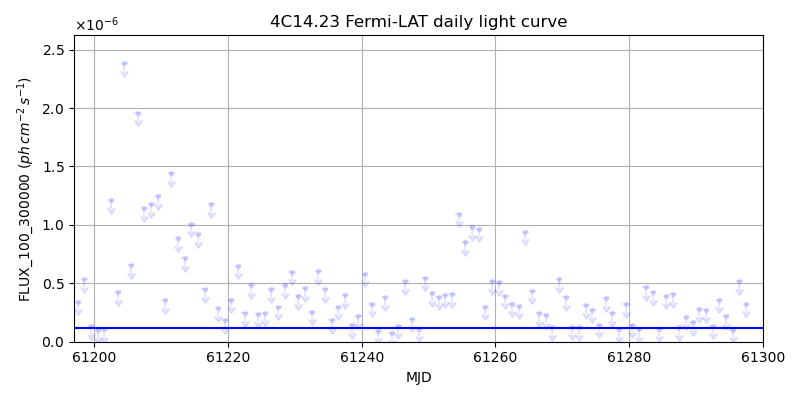
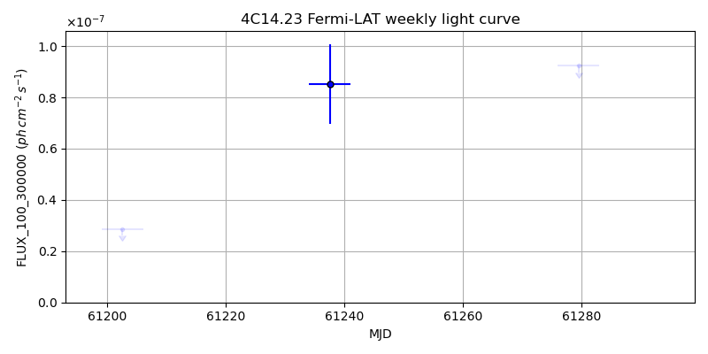
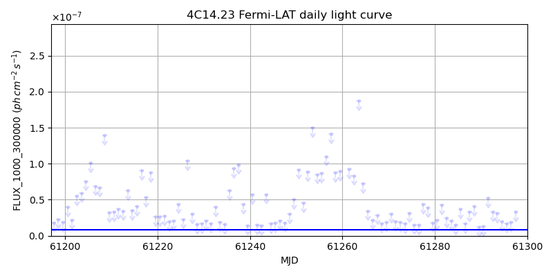
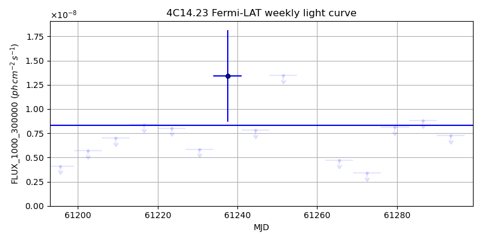

LAT Lightcurve site: https://fermi.gsfc.nasa.gov/ssc/data/access/lat/msl_lc/source/4C_14d23
NED: Query
Time of last update of this page: UT: 2026-09-15 15:18 (MJD: 61298.638)
| Property | Value |
|---|---|
| R.A. | 7:25:16.80 |
| Dec. | 14:25:12.0 |
| z | 1.039 |
| 3FGL SpectrumType | LogParabola |
| 3FGL PL Index | |
| 3FGL Flux_100_300000 | 1.14e-07 1 / (s cm2) |
| 3FGL Flux_1000_300000 | 8.34e-09 1 / (s cm2) |
| 3FGL Flux >200 GeV | 4.99e-12 1 / (s cm2) |
| 3FGL Extrap. Crab >200 GeV | 0.02 |
| 3FGL Flux After EBL Absorption >200GeV | 7.11e-14 1 / (s cm2) |
| 3FGL EBL Crab Fraction >200GeV | 0.00 |

| MJD | dMJD | Flux | dFlux | Frac3FGL | FracCrab>200GeV | EBLFracCrab>200GeV |
|---|---|---|---|---|---|---|
| 61293.50 | 0.50 | 3.61e-07 | 0.00e+00 | 0.00 | 0.00 | 0.00 |
| 61294.50 | 0.50 | 2.21e-07 | 0.00e+00 | 0.00 | 0.00 | 0.00 |
| 61295.50 | 0.50 | 1.04e-07 | 0.00e+00 | 0.00 | 0.00 | 0.00 |
| 61296.50 | 0.50 | 5.17e-07 | 0.00e+00 | 0.00 | 0.00 | 0.00 |
| 61297.50 | 0.50 | 3.26e-07 | 0.00e+00 | 0.00 | 0.00 | 0.00 |

| MJD | dMJD | Flux | dFlux | Frac3FGL | FracCrab>200GeV | EBLFracCrab>200GeV |
|---|---|---|---|---|---|---|
| 61265.50 | 3.50 | 1.25e-07 | 0.00e+00 | 0.00 | 0.00 | 0.00 |
| 61272.50 | 3.50 | 1.46e-07 | 0.00e+00 | 0.00 | 0.00 | 0.00 |
| 61279.50 | 3.50 | 9.24e-08 | 0.00e+00 | 0.00 | 0.00 | 0.00 |
| 61286.50 | 3.50 | 1.74e-07 | 0.00e+00 | 0.00 | 0.00 | 0.00 |
| 61293.50 | 3.50 | 1.30e-07 | 0.00e+00 | 0.00 | 0.00 | 0.00 |

| MJD | dMJD | Flux | dFlux | Frac3FGL | FracCrab>200GeV | EBLFracCrab>200GeV |
|---|---|---|---|---|---|---|
| 61293.50 | 0.50 | 3.09e-08 | 0.00e+00 | 0.00 | 0.00 | 0.00 |
| 61294.50 | 0.50 | 1.98e-08 | 0.00e+00 | 0.00 | 0.00 | 0.00 |
| 61295.50 | 0.50 | 1.73e-08 | 0.00e+00 | 0.00 | 0.00 | 0.00 |
| 61296.50 | 0.50 | 1.87e-08 | 0.00e+00 | 0.00 | 0.00 | 0.00 |
| 61297.50 | 0.50 | 3.32e-08 | 0.00e+00 | 0.00 | 0.00 | 0.00 |

| MJD | dMJD | Flux | dFlux | Frac3FGL | FracCrab>200GeV | EBLFracCrab>200GeV |
|---|---|---|---|---|---|---|
| 61265.50 | 3.50 | 4.72e-09 | 0.00e+00 | 0.00 | 0.00 | 0.00 |
| 61272.50 | 3.50 | 3.37e-09 | 0.00e+00 | 0.00 | 0.00 | 0.00 |
| 61279.50 | 3.50 | 8.12e-09 | 0.00e+00 | 0.00 | 0.00 | 0.00 |
| 61286.50 | 3.50 | 8.84e-09 | 0.00e+00 | 0.00 | 0.00 | 0.00 |
| 61293.50 | 3.50 | 7.24e-09 | 0.00e+00 | 0.00 | 0.00 | 0.00 |
--------------------------------------------------------- Using user-supplied coords: 7:25:16.80 14:25:12.0 2000 --------------------------------------------------------- FLWO UT night of: 2026-09-16 Local Sid. @ Midnight: 23:17 Sunset (-15.0) (local, UT): 19:37 02:37 Sunrise (-15.0) (local, UT): 05:01 12:01 Moonrise (local, UT): Moonset (local, UT): 20:59 03:59 Moon phase: 0.27 --------------------------------------------------------- AzTime LSID UT Obj_el Obj_az Mn_el Mn_az Sep. --------------------------------------------------------- 19:37 18:53 02:37 -43.3 348.8 13.4 230.2 119.8 20:07 19:23 03:07 -43.9 358.8 8.5 234.7 120.0 20:37 19:53 03:37 -43.5 8.9 3.4 238.9 120.2 21:07 20:23 04:07 -42.0 18.6 -1.3 242.7 120.5 21:37 20:53 04:37 -39.5 27.6 -7.8 246.3 120.7 22:07 21:23 05:07 -36.1 35.8 -13.6 249.6 120.9 22:37 21:53 05:37 -32.0 43.1 -19.4 252.8 121.2 23:07 22:23 06:07 -27.4 49.6 -25.4 255.9 121.4 23:37 22:53 06:37 -22.3 55.3 -31.4 259.0 121.7 00:07 23:23 07:07 -16.9 60.5 -37.4 262.0 122.0 00:37 23:53 07:37 -11.2 65.2 -43.5 265.2 122.3 01:07 00:24 08:07 -4.9 69.5 -49.6 268.6 122.6 01:37 00:54 08:37 1.1 73.5 -55.7 272.3 122.9 02:07 01:24 09:07 7.1 77.4 -61.8 276.8 123.3 02:37 01:54 09:37 13.3 81.1 -67.8 282.7 123.6 03:07 02:24 10:07 19.6 84.8 -73.7 291.5 123.9 03:37 02:54 10:37 26.0 88.6 -79.0 307.4 124.3 04:07 03:24 11:07 32.4 92.6 -82.7 342.4 124.6 04:37 03:54 11:37 38.8 97.0 -81.9 32.3 125.0 05:01 04:19 12:01 43.9 100.9 -78.4 56.3 125.2 --------------------------------------------------------- Dark hours >55 deg.: 0.00